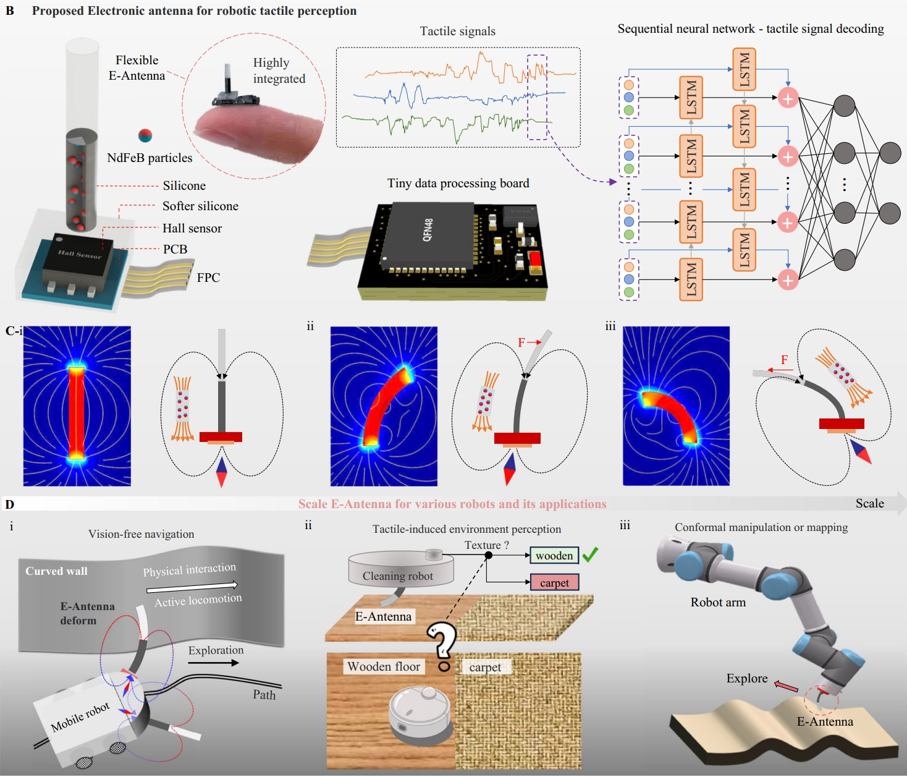
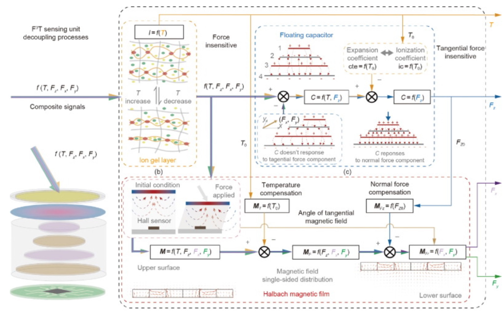
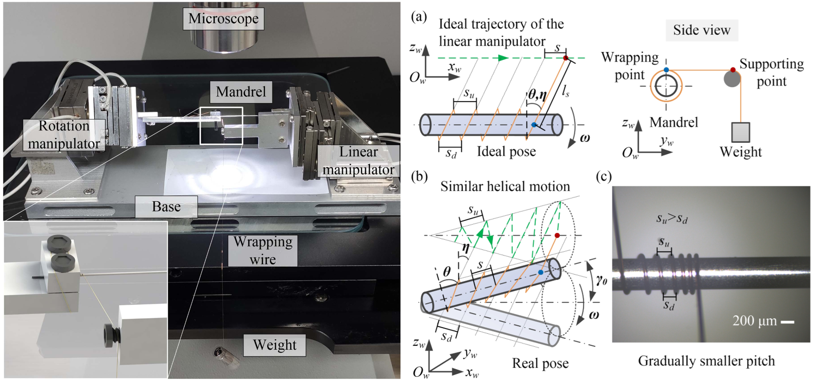
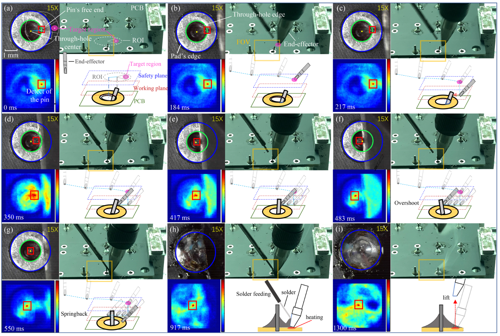
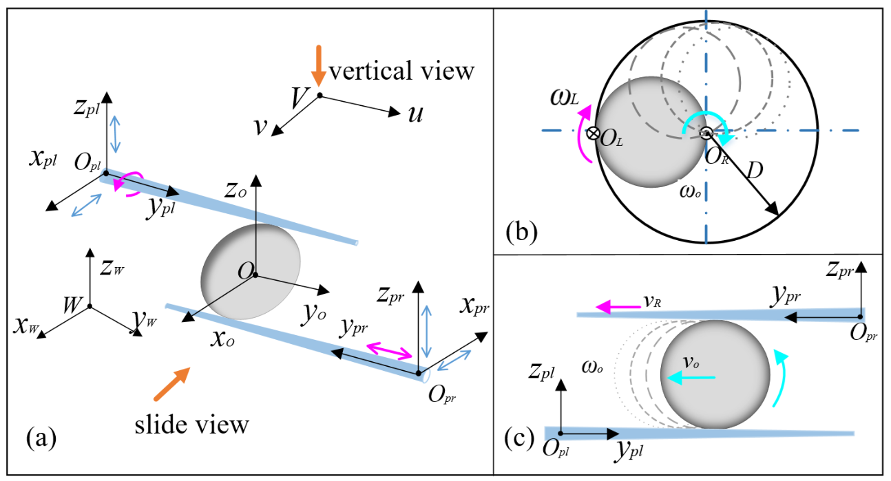
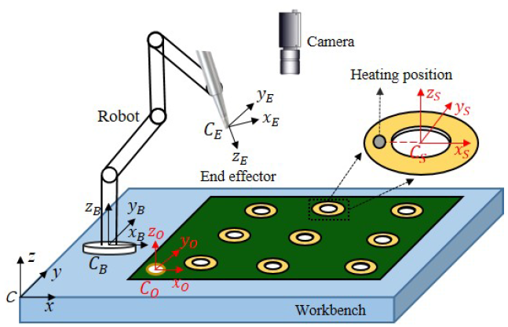
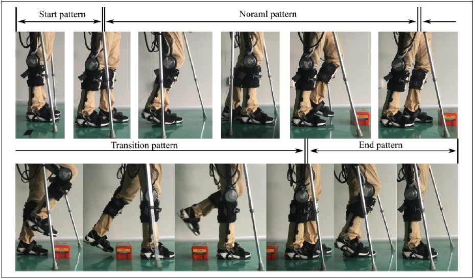
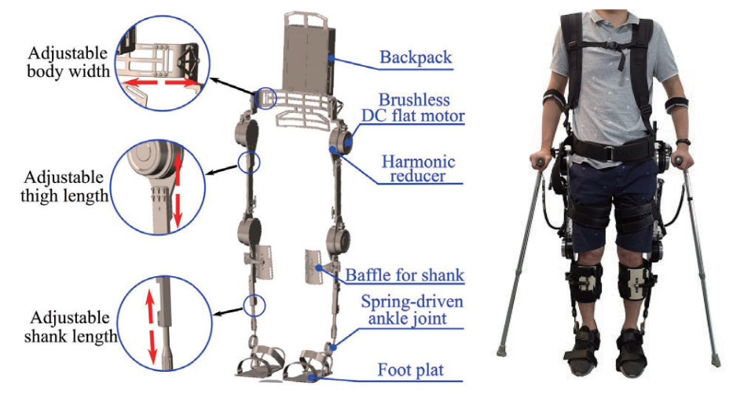
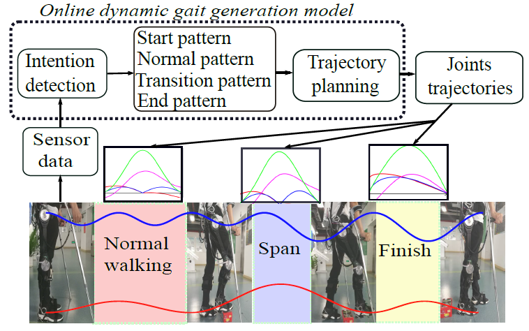
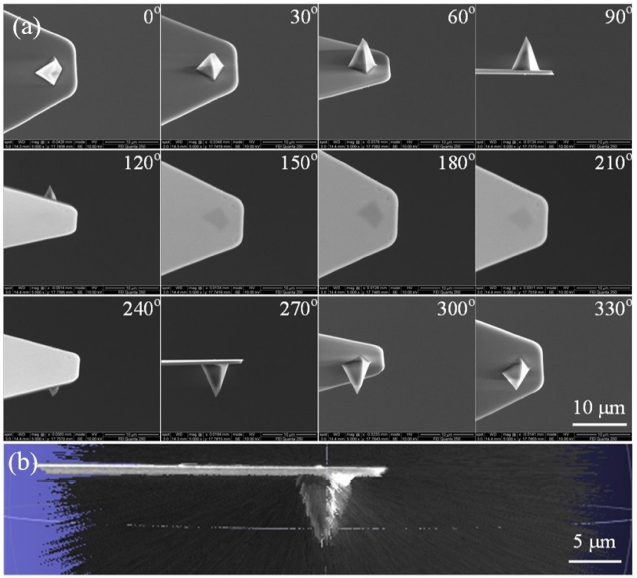

Hong Kong University of Science and Technology
Postdoc · Mevita Lab
Research interests: Embodied AI, high-performance tactile sensors
Supervisor: Yajing Shen
Robotics · Perception · Embodied AI
Postdoc at Mevita Lab
Hong Kong University of Science and Technology
Department of Electronic and Computer Engineering
Research interests: Embodied AI, tactile sensing, bio-inspired robotics.

Postdoc · Mevita Lab
Research interests: Embodied AI, high-performance tactile sensors
Supervisor: Yajing Shen
Visiting Student · ECE Department
Research interests: Robotic tactile perception, bio-inspired robots
Supervisor: Yajing Shen
Master in Control Engineering · Outstanding Graduate
GPA: 3.72/4.0 · Ranking: Top 2%
Supervisors: Xinyu Wu, Wanfeng Shang
Bachelor in Electrical Engineering and Automation · Outstanding Graduate
GPA: 3.71/4.0 · Ranking: 6/236
Supervisors: Fuhai Li, Zhikang Shuai, Lu Fang, Haoming Chen

Nature Communications · 2025


Biosensors and Bioelectronics · 2024

IEEE/ASME Transactions on Mechatronics · 2023

IEEE/ASME Transactions on Mechatronics · 2023

IEEE Transactions on Automation Science and Engineering · 2020

IEEE International Conference on Robotics and Automation · 2021

International Journal of Advanced Robotic Systems · 2020

IEEE International Conference on Realtime Computing and Robotics · 2020

IEEE International Conference on Information and Automation · 2018

IEEE Transactions on Nanotechnology · 2020
Sensors
Special Issue: Bio-Inspired Perception and Manipulation for Intelligent Robotic Systems ↗
Special Issue: Intelligent Robotic Sensing and Manipulation for Biomedical Engineering Applications ↗
IEEE International Conference on Robotics and Biomimetics (ROBIO 2024).
Science Robotics, Nature Communications, IEEE Transactions on Robotics (TRO), IEEE/ASME Transactions on Mechatronics (TMECH), Robotics: Science and Systems (RSS), IEEE International Conference on Robotics and Automation (ICRA), and IEEE/RSJ International Conference on Intelligent Robots and Systems (IROS).
Hunan University · Jun. 2016 – Mar. 2018
Organized and trained members for the China Electronic Design Competition, Robot Competition, Smart Car Competition and Engineering Ability Competition. Led the team to earn more than 20 national and provincial awards.